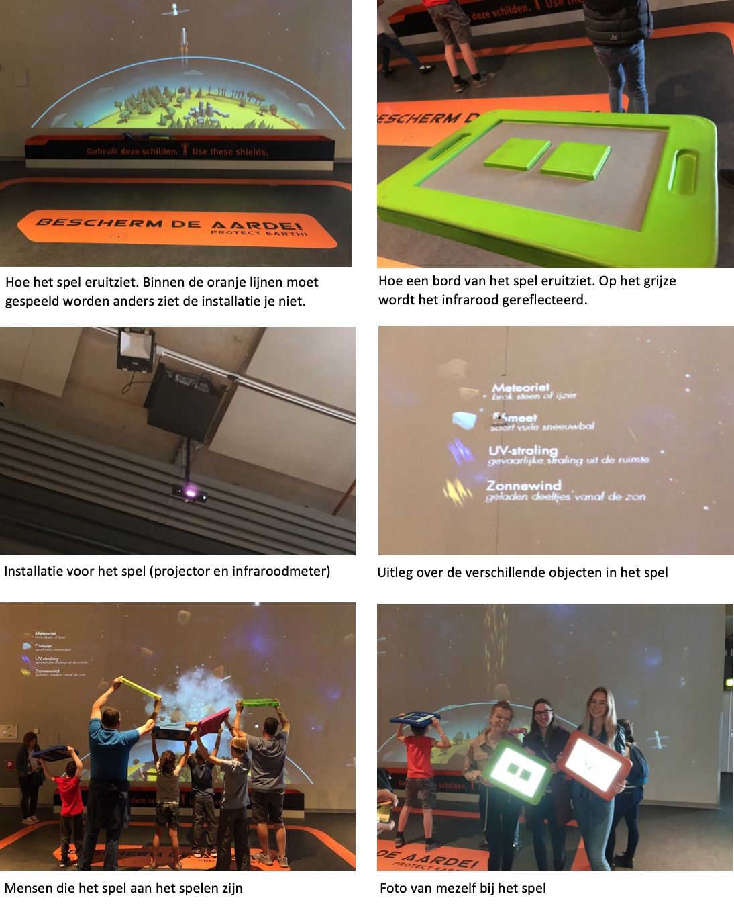

Met de excursie ben ik naar het NEMO-museum geweest. Het is een wetenschap en technologiemuseum in Amsterdam. De technologie die hier wordt gebruikt sluit erg aan bij de technologie waar wij het in dit vak over hebben. Dit is dan ook de reden dat dit museum een inspiratiebron voor mij is.
In het museum trok een spel waarbij meteorieten van de aarde geweerd moesten worden mijn aandacht. Dit spel bevindt zich gelijk naast de trap. Het doel van het spel is om de vliegende meteorieten tegen te houden om niet de ozonlaag binnen te dringen.
Het spel bevat een grote muur waarop het spel wordt geprojecteerd met een projector. Op de projectie is een halve aardbol te zien met een ozonlaag die goed zichtbaar is gemaakt. Er vallen meteorieten uit de lucht die de ozonlaag binnendringen. De bedoeling van het spel is om deze meteorieten tegen te houden om zo de aarde te beschermen. Dit wordt mogelijk gemaakt door het gebruik van bepaalde bordjes door de spelpersonen. Deze bordjes bevatten bepaald materiaal op het oppervlak, waardoor infrarood gereflecteerd wordt en er beweging gedetecteerd wordt. Hierdoor worden de bordjes zichtbaar op de projectie. Als jij naar links beweegt, dan beweegt het bordje op de projectie zich ook naar links over de ozonlaag. Dit geldt vice versa ook voor rechts. Elk bordje kent andere hoeveelheden vlakjes erop. Deze zullen erop zitten zodat het systeem de verschillende bordjes kan onderscheiden. Zo kunnen meerdere mensen tegelijk het spel spelen. Wanneer een meteoriet op jouw bordje op de projectie beland, dan zal deze meteoriet worden verwoest en dan zal deze niet de ozonlaag binnendringen. Zo bescherm je de aarde. Je moet het bordje hiervoor wel met de platte kant naar boven richten, want zo zal het infrarood worden gereflecteerd op het oppervlak van je bordje. Op de grond is ook met oranje aangegeven in welk vlak je moet staan, wil de projectie jou kunnen zien en wil je mee kunnen doen aan het spel. De afbeeldingen en het filmpje zullen deze uitleg ondersteunen.
De installatie maakt dus gebruik van de input technologie: infrarood en accelerometer en de output technologie: projectie en beweging (van de elementen op de projectie).
Ik vind dit project interessant, omdat je het met zoveel mensen kan spelen als je wilt. Ook vind ik het gaaf dat er met infrarood wordt gewerkt. Infrarood is iets dat altijd wel mijn aandacht trekt. Dit komt doordat ik het gaaf vind dat er door het meten van een warmteverschil, beweging gedetecteerd kan worden.
Ik heb verschillende installaties gezien tijdens de excursie. Ik vond het ook leuk hoe creatief NEMO was met verschillende ideeën voor de installaties. Wat ik het meest heb geleerd en wat voor mij dan tegelijkertijd ook het meest waardevol was, is hoe zo een installatie in zijn werk gaat. Ik heb nu namelijk in real-life gezien hoe het in zijn werk gaat en hoe het wordt gebruikt. Dit vond ik erg leuk en ook handig. Hierdoor krijg je namelijk toch een beter inzicht in hoe de installaties in elkaar zitten. Ook vond ik het leuk om te zien hoe actief en met hoeveel plezier de interfaces werden gebruikt. Dan zie je dat je mensen echt plezier kan brengen met zo een installatie. Wat mij minder aansprak, was dat de leeftijd van de doelgroep hier laag lag. Het is begrijpelijk dat voor deze spellen de doelgroep leeftijd lager ligt, maar zulk soort interfaces zouden ook voor wat oudere mensen leuk kunnen zijn. Ook spraken mij de installaties die minder op techniek berusten minder aan. Misschien ligt dat eraan dat ik nu met een technisch vak bezig ben. Toch denk ik dat mijn interesse voor technische soms onverklaarbare dingen groter is dan voor dingen waarvan ik al begrijp hoe iets in elkaar zit. Omdat dat mysterieus is en ik ben nieuwsgierig dus dan wil ik graag weten hoe zoiets in elkaar zit.